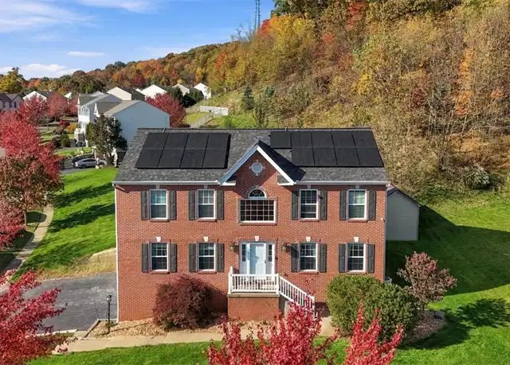

Friday, November 13, 2026
One price drop today, on a near-miss we sent on Oct 30. Drive times are in minutes to Woodbine (Cranberry), then Foxwood (Mars), then Broadway (Wexford). They assume no traffic. Rush hour will probably add 10-25%.

01. 8001 Maureen Dr, Cranberry Twp (Marshall Woods), Butler County - $589,900 (was $599,900) [PRICE DROP]
Dropped $10k since we sent it on Oct 30. Still a near-miss over $550k, but now $10k under the $600k cap.
4 bed / 3.5 bath, 2,640 sq ft, built 2008, 0.38 ac.
Fully finished lower level with a 27x15 rec/game room, a second kitchenette and a full bath. 3-car built-in garage plus extra driveway parking. Composite deck over a flat, usable backyard with a storage shed.
The listing calls it turn-key and meticulously maintained. Its description now says the solar panels were recently added and are already paying off. It still doesn't say whether they're owned or leased, so that's worth asking.
Drive: 11 / 15 / 15. Under 15 min to all three.
707 Dunbury Ct and 130 Woodbine Dr are still pending, and 211 Katherine Dr is still contingent. 111 Aberdeen Dr (from yesterday) is still mixed: Redfin and Coldwell Banker show it active at $599,000, but Howard Hanna still says pending. Every other home from earlier updates is still active at its last price.
Nothing new met the criteria. I checked 35 active listings in the Butler County ZIPs. The rest were already sent, or were too far away (Evans City, Valencia, Zelienople) or in Allegheny County.
Prepared by your PA house search assistant
Photos are from the public Redfin listings.